CS280A · Project 3
Fun with Flow Models
Pretrained image generation and editing, visual illusions, and learning a flow model on MNIST.
Part A - Exploring the Power of Flow Models
Part A - Exploring a Pretrained Flow Model
I use a pretrained text-conditioned velocity field to reconstruct my own photographs, generate images, edit images, and combine interpretations across transformations and spatial frequencies. No model training is performed in Part A.
| Setting | Value |
|---|---|
| Model | MCG-NJU/PixNerd-XXL-P16-T2I |
| Resolution and normalization | 512 x 512 RGB; [-1, 1] |
| Euler step size | 0.02; shorten the final step to reach t = 1 |
| Default seed | 180; per-experiment exceptions are listed below |
| Text condition | a high quality photo (unless otherwise specified) |
| Guidance for editing and illusions | w = 7; empty-string unconditional prompt |
| Runtime | Tesla T4; PyTorch 2.11.0+cu130 |
The primary input for Sections A1.1-A1.5 is my photograph IMG_9178.jpg, showing a large expressive pumpkin sculpture outdoors. It is center-cropped and resized before use. The Campanile is used separately in the editing experiments.
Time 0 is Gaussian noise and time 1 is the clean image. The same saved image/noise pair is reused across the three denoising times.
A1.1 - Noisy Training Inputs
I implement the linear interpolation above and reuse one Gaussian noise tensor (seed 180) at t = 0.25, 0.50, and 0.75. Increasing t increases the contribution of the original image. Endpoint checks recover noise at t = 0 and the clean image at t = 1.
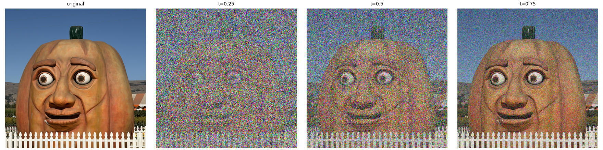
A1.2 - Classical Gaussian Denoising
I first divide each noisy input by t to restore the clean-image amplitude, then sweep Gaussian standard deviations 1, 2, 4, 8, and 16. For each time, I select the result with the lowest pixel MSE to the known original. This is an oracle-selected classical baseline; the clean reference is available for this experiment.
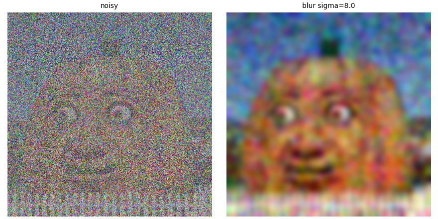
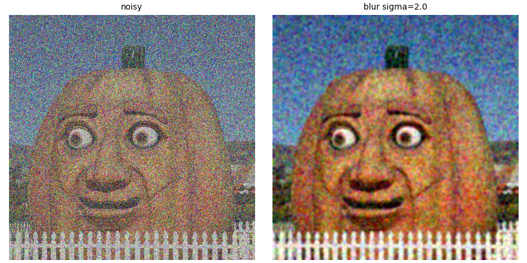
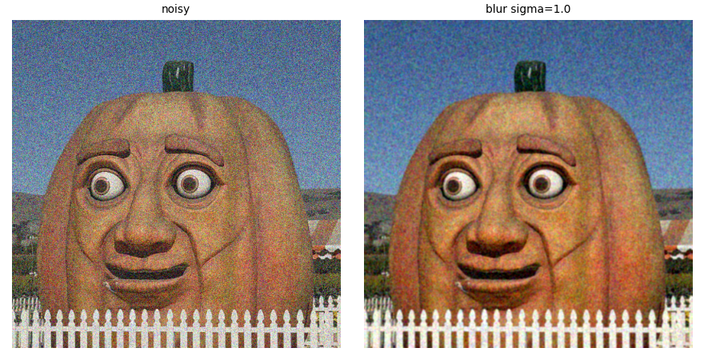
Smoothing suppresses noise but also removes edges and texture. It cannot use semantic information about the sculpture, and the low-time input requires a particularly strong compromise between noise and detail.
A1.3 - One-Step Denoising
For each saved noisy tensor, I make exactly one model prediction with the prompt "a high quality photo". The estimate extrapolates the predicted velocity to the clean endpoint.
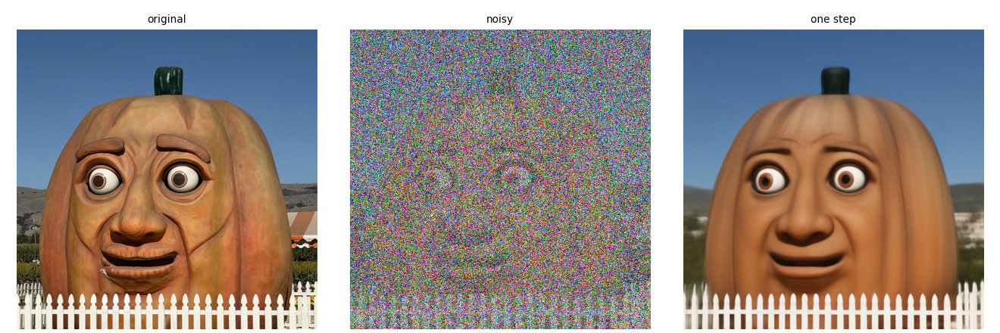
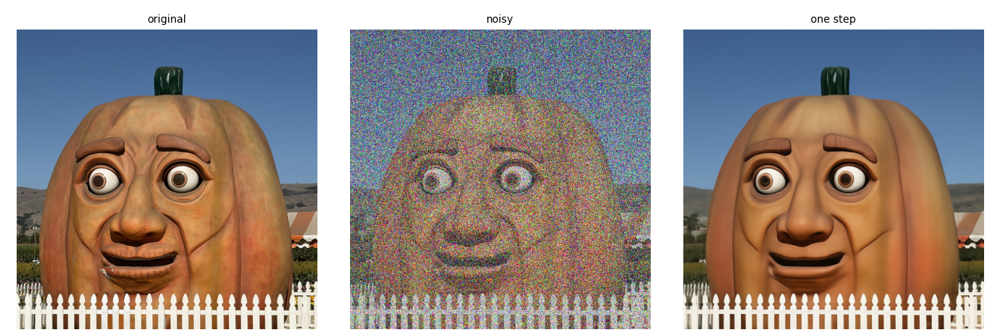
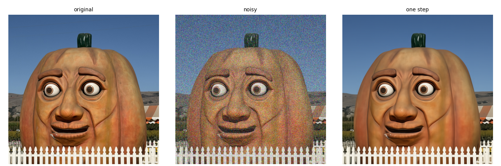
The learned prediction restores recognizable structure with much less visible noise than simple blur. At lower t, recovery is more uncertain and fine details differ from the original. A single velocity extrapolation need not follow the curved trajectory of the learned field.
A1.4 - Predicted and Ground-Truth Updates
I visualize the update rather than the raw velocity. All signed RGB updates use one symmetric range with zero at middle gray, and all error maps share the same linear minimum and maximum. The RMS is computed across RGB at each pixel before display scaling.
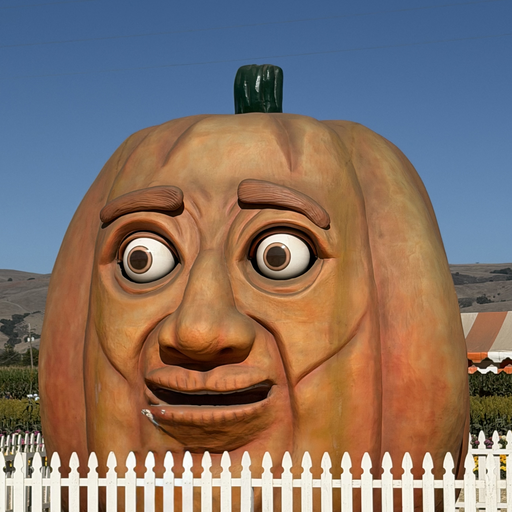
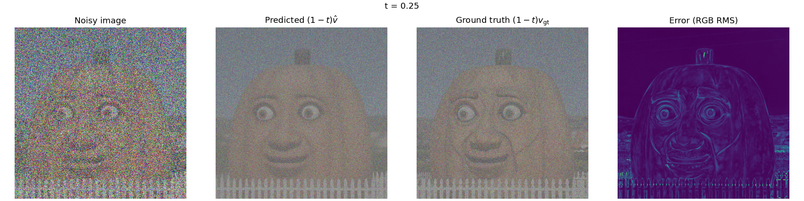
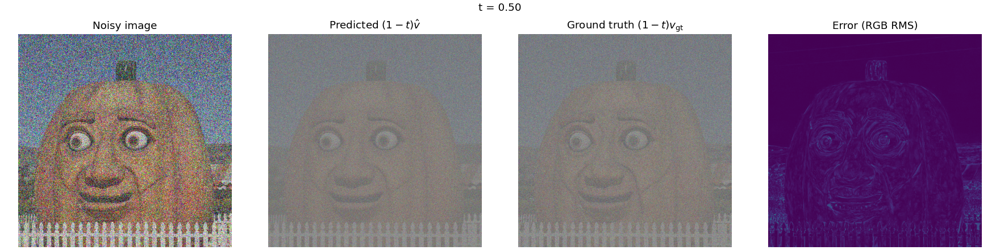
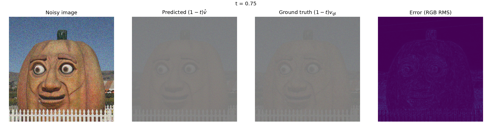
The reference update cancels the particular noise realization exactly. The model approximates that update using a learned image prior. Errors reflect both imperfect noise cancellation and differences in recovered structure; their magnitude also depends on the remaining factor (1 - t).
A1.5 - Iterative Euler Denoising
Starting from the saved t = 0.50 tensor, I recompute the velocity at each step and integrate to 1 using 25 updates. The sampler also passes checks for a full 50-step trajectory, a 25-step half trajectory, and a shortened final step.
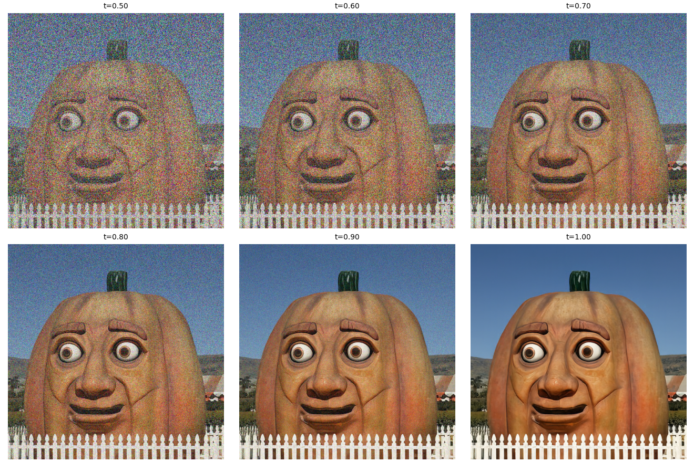
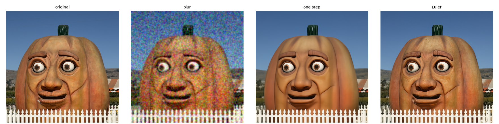
| Method at t = 0.50 | Reconstruction MSE (normalized RGB) |
|---|---|
| Gaussian blur | 0.032392 |
| One-step | 0.005533 |
| Euler | 0.007248 |
Euler produces a more detailed reconstruction but can change fine structures as it follows the model prior. On this image, one-step has the lowest pixel MSE; iterative sampling does not win this numerical comparison. Reconstruction error and perceived detail measure different aspects of the result.
A1.6 and A2.1 - Generation and Classifier-Free Guidance
I generate five independent initial noises using seeds 180-184 and integrate from 0 to 1 with 50 Euler steps. The first row uses ordinary conditional prediction; the second repeats the same initial noises with guidance.
Both branches see exactly the same x and t; the unconditional branch uses an empty prompt. The w = 0 implementation check passes.


The paired rows show how guidance changes the same starting states. Guidance increases the influence of the text-conditioned field, affecting contrast, detail, and composition. Because the prompt is generic, this is a qualitative comparison rather than a measured prompt-alignment score.
A3.1 - Image-to-Image Editing
For each input, I mix the image and Gaussian noise using the linear interpolation at tstart, then integrate from tstart to 1 with w = 7 and h = 0.02. I reuse seed 180 across starting times. The prompt is "a high quality photo".
Each panel contains the original followed by all seven required times, read left to right and then top to bottom: 0.02, 0.04, 0.06, 0.10, 0.14, 0.25, 0.50.

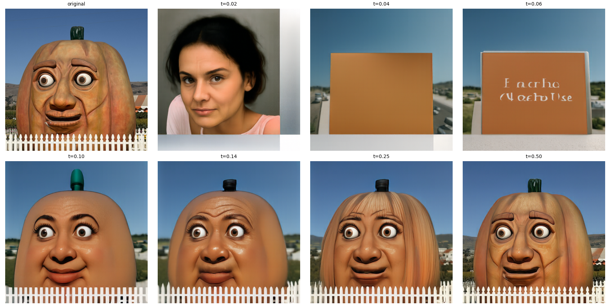
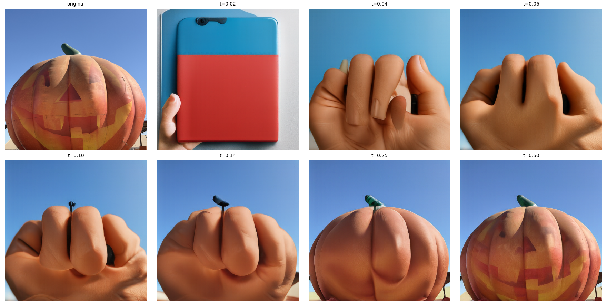
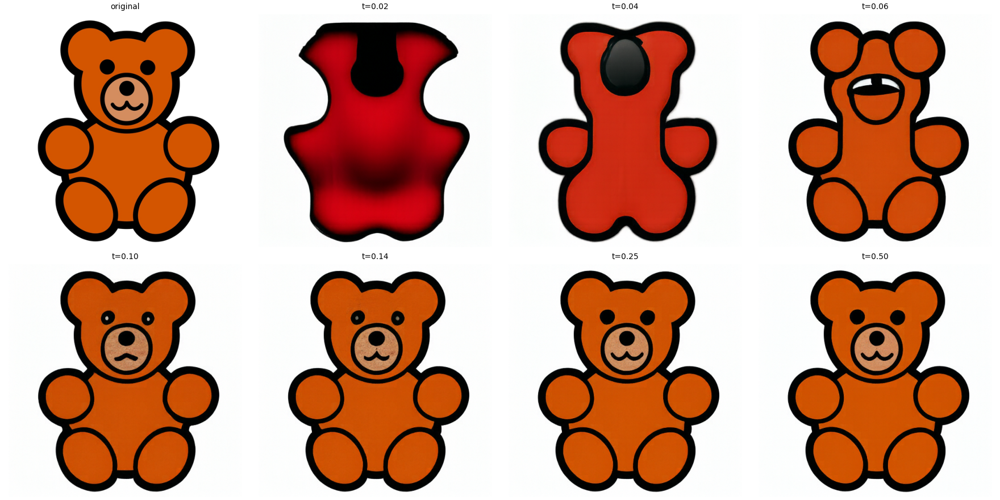
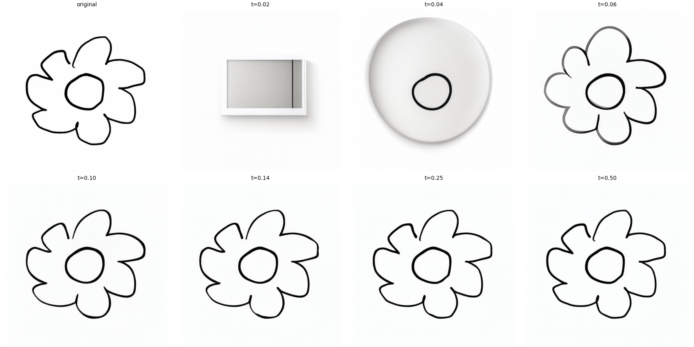
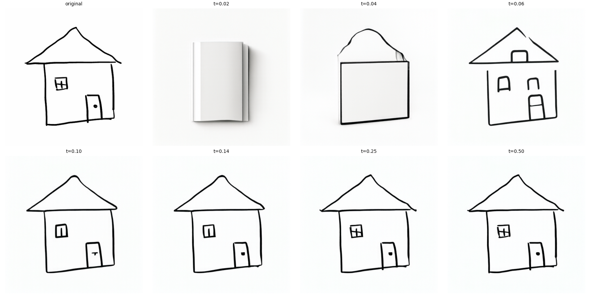
Lower starting times replace more of the input with noise and permit larger semantic changes. Higher starting times preserve more geometry, color, and layout. This tradeoff also applies to the icon and drawings: photorealistic reinterpretations can emerge, while the original composition becomes easier to recognize at larger tstart.
A3.2 - Text-Guided Editing
I repeat the same seven starting times and use explicit target descriptions. Each image keeps the same initial noise across its sweep; only the starting time and the text condition change the trajectory.
Campanile prompt: "a photograph of a rocket on a launch pad under a blue sky".
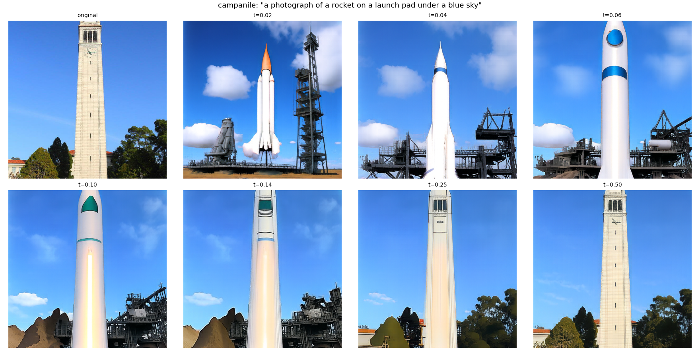
Personal image 1 prompt: "a photograph of a giant smiling stone statue in a garden".
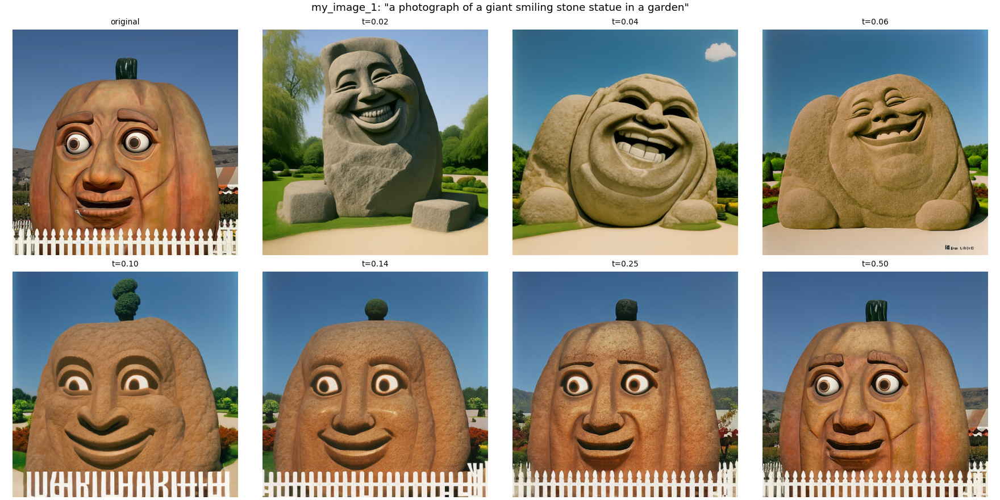
Personal image 2 prompt: "a photograph of a glowing jack-o-lantern at night".
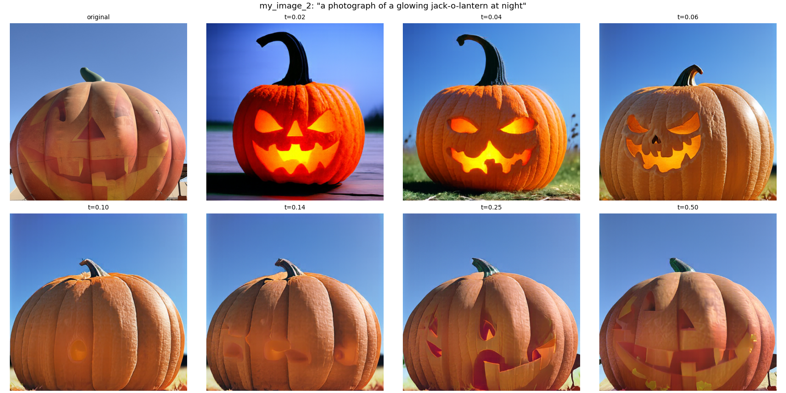
At small starting times, the prompt can dominate the source identity. At larger times, the target competes with stronger input structure. Intermediate settings offer a compromise, but there is no single best time for every input and edit.
A3.3 - Visual Anagrams with 180-Degree Rotation
Here F rotates by 180 degrees and is its own inverse. I average the two predictions in a common coordinate system before every Euler step. The rotation involution check passes. Each figure shows the same sample in both orientations, with its associated prompts.
Pair 1, seed 180: "an oil painting of an old man" / "an oil painting of people around a campfire".
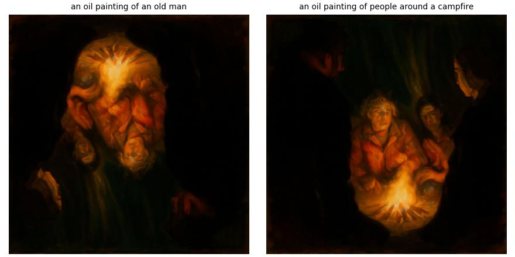
Pair 2, seed 181: "a lithograph of a snowy mountain village" / "a lithograph of a horse".
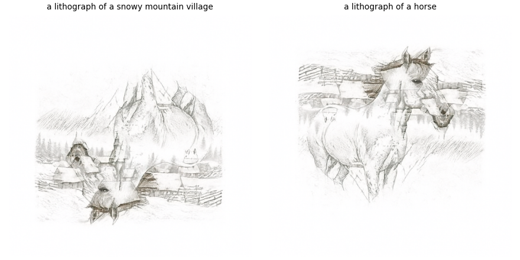
The subjects share contours and textures rather than occupying independent images. Recognizability depends on orientation and prompt pair; a numerically correct sampler alone does not guarantee a convincing illusion.
A3.4 - Hybrid Images
I combine the low-frequency structure from prompt A with the high-frequency residual from prompt B at every step. The Gaussian low-pass uses sigma = 16 and kernel size 265 at 512 x 512. Each image is shown large and as a small preview to reveal the change in dominant scale.
Pair 1, seed 180. Distant structure: "a lithograph of a skull". Close detail: "a lithograph of a waterfall".
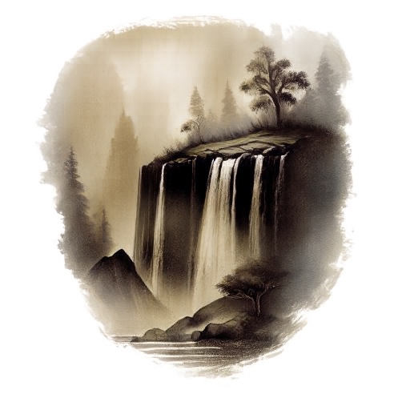
Pair 2, seed 181. Distant structure: "a lithograph of a cat". Close detail: "a lithograph of a forest".

Downsampling suppresses fine detail and emphasizes the low-frequency subject. The two interpretations are not perfectly separated; the result depends on whether the two prompts support compatible spatial structure.
CS280A Extra - Additional Anagram Transformations
I use color inversion and 90-degree rotation as two additional transformations beyond 180 degrees. The same averaging rule applies, but the second velocity must be mapped back using the correct inverse. Horizontal reflection is retained as a less successful exploratory result.
Color inversion: on normalized [-1, 1] tensors, F(x) = -x and F−1(v) = -v. Prompts: "a black and white lithograph of a skull" / "a black and white lithograph of a snowy forest". I tried seeds 191, 210, and 211; seed 210 gives the clearest change in interpretation.
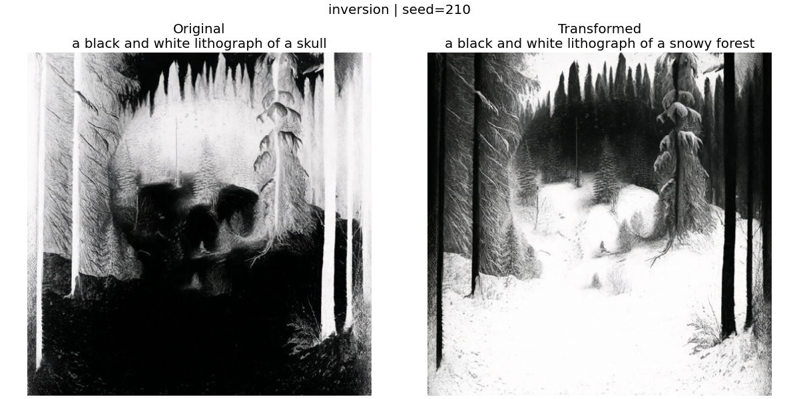
The inverted view emphasizes trees and snowy ground, although some facial features remain. I regard this as an improved but imperfect two-view illusion.
90-degree counterclockwise rotation: inverse-map the second prediction clockwise. Prompts: "a detailed lithograph of a waterfall cascading down a rocky cliff" / "a detailed lithograph of a steam train crossing a railway bridge". Seeds 220 and 221 were tested.
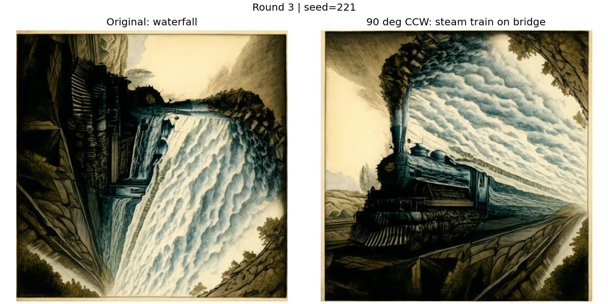
This pair produces a more distinct change in interpretation. Unlike 180-degree rotation, 90-degree rotation is not self-inverse; using the clockwise inverse is necessary for consistent velocity averaging.
Reflection trial: "a lithograph of a woman's face in profile" / "a lithograph of a bird perched on a branch". Seeds 190, 210, and 211 were explored.
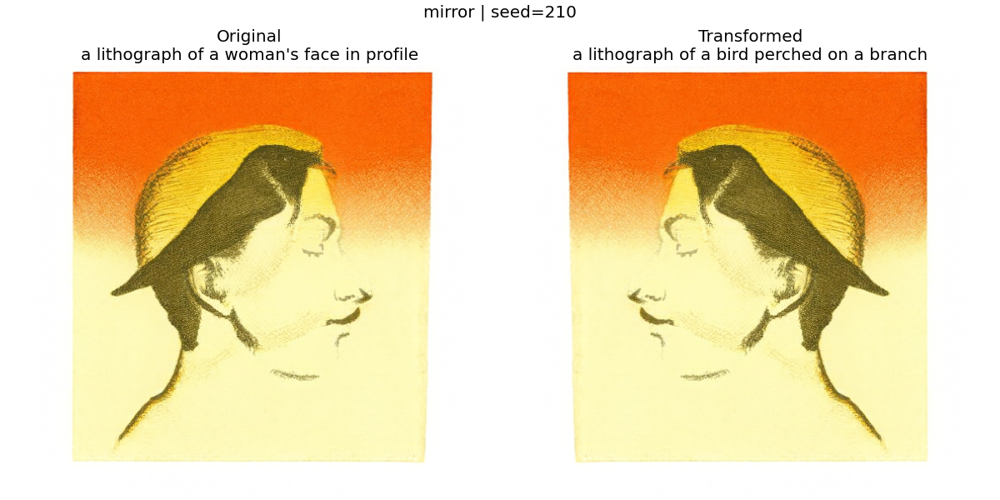
CS280A Extra - Course Logo Design
The design goal is a compact Berkeley computer-vision emblem: a golden clock tower inside a navy camera-aperture motif. Initial photo-based edits retained sky, trees, and a photographic composition, which made them less suitable as a logo.
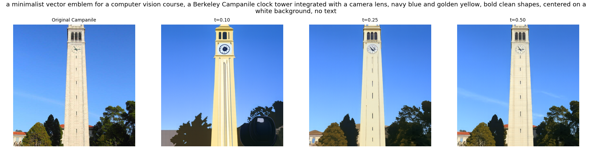
I next simplified the prompt and explored tstart = 0.02, 0.04, 0.06, and 0.10 with fixed seed 200. A shared-time control at 0.04 compared the original and revised prompts. These trials became more illustrative but did not reliably remove the photographic background.
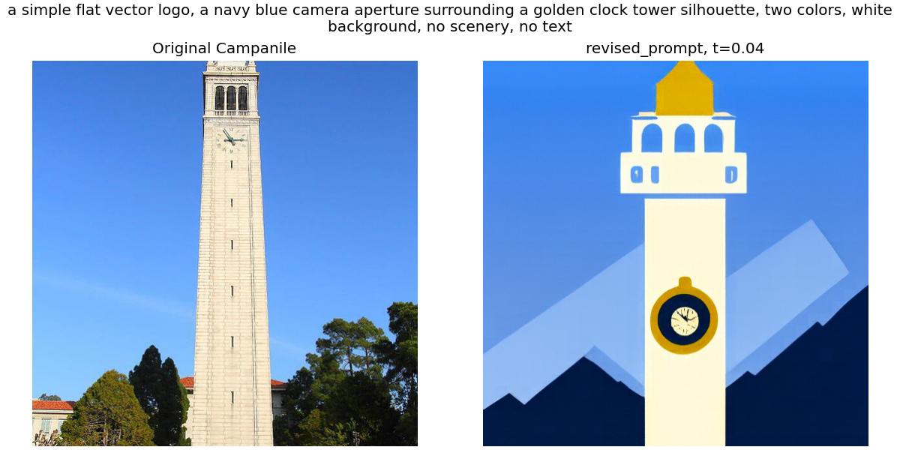
I then drew a geometric guide programmatically in Python. This is a separate design input, not a model-generated result and not one of my two hand-drawn inputs above. I edited it at tstart = 0.10, 0.25, and 0.50, keeping seed 200, h = 0.02, and w = 7 fixed.
Final prompt: "a clean flat vector style university computer vision course logo, a golden clock tower centered inside a navy blue camera aperture emblem, compact circular icon, simple bold geometric shapes, generous white margins, isolated on a plain white background, no landscape, no text".
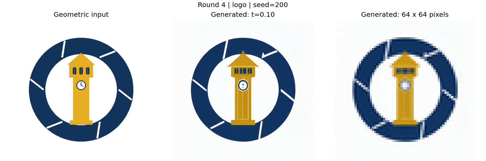
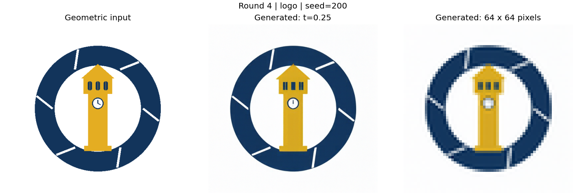
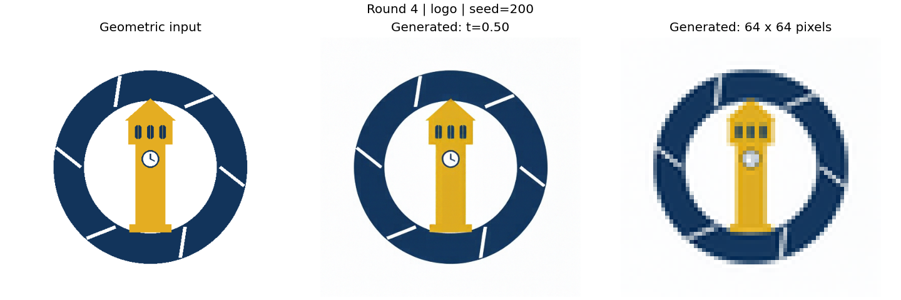
I select tstart = 0.25 for its compact composition and recognizable tower. The model output is a raster image despite the prompt requesting a vector-like style. I add the words "UC BERKELEY", "CS 280A", and "COMPUTER VISION" afterward with Pillow for reliable typography; the raw generated emblem is preserved above.
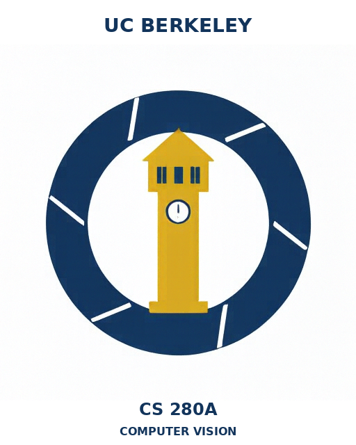
Part A - Sources and Reproducibility
My own photographs: IMG_9178.jpg and IMG_9176.jpg. My drawings: drawing_1_flower.jpg and drawing_2_house.jpg. Campanile input: supplied course asset. The geometric logo guide was drawn in code; all displayed generated results are from the submitted notebook.
Web teddy bear: "Teddy bear icon.svg" by pitr, sourced from Wikimedia Commons and originally OpenClipart. CC0 / public domain. The supplied JPEG is a raster version of this icon.
Source: https://commons.wikimedia.org/wiki/File:Teddy_bear_icon.svg

Original icon: https://openclipart.org/detail/26940/teddy-bear-icon
Assignment and starter: https://cal-cs180.github.io/fa26/hw/proj3-flow/parta.html
Model revision: 9fa8836b553976b88a3b27649ed1628499e02bf9. Text-encoder revision: 70d244cc86ccca08cf5af4e1e306ecf908b1ad5e. Model: https://huggingface.co/MCG-NJU/PixNerd-XXL-P16-T2I
Additional transformations are motivated by Visual Anagrams: https://arxiv.org/abs/2311.17919 . The notebook contains the full implementation, prompts, seed trials, saved outputs, and run metrics. Selected results are shown here, including the weak reflection trial.